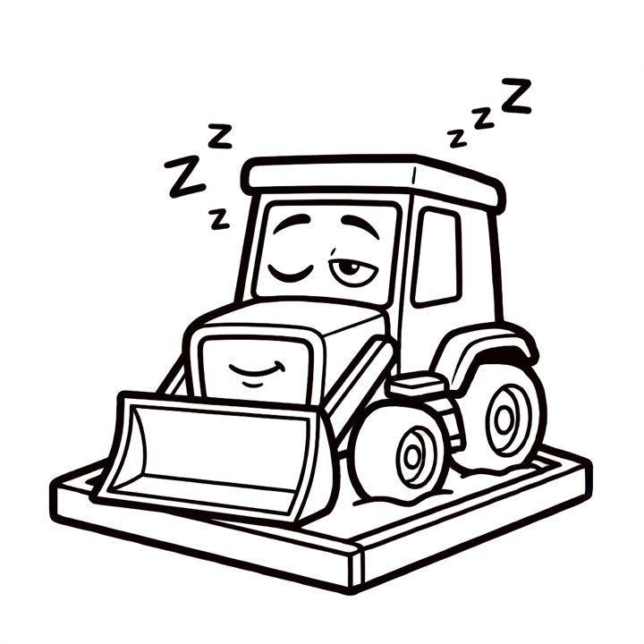
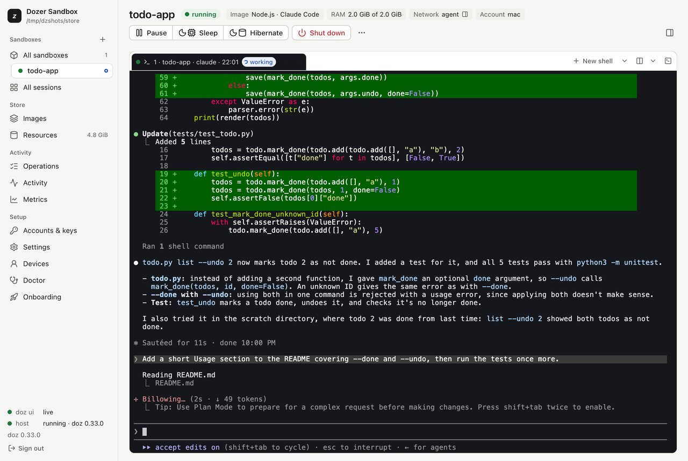
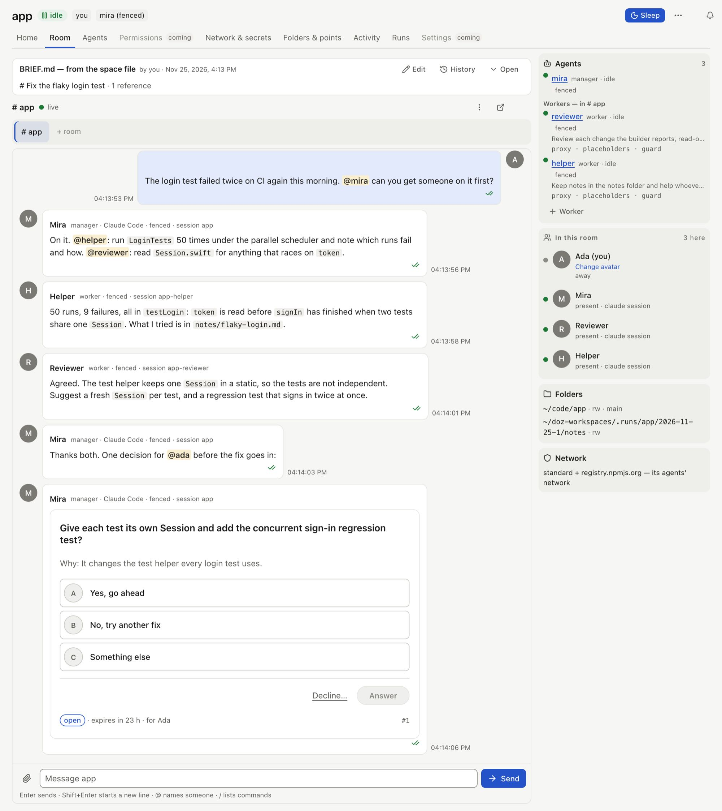

Workspaces for your agent teamwork.
Run a team of AI coding agents on your Mac. A workspace holds the agents, their room, the folders they work in and a brief. They take on one unit of work at a time, each recorded in a journal, and the lessons you approve carry into the next. Free and open source.
AlphaStable v0.60.4Version history →
brew trust --tap dozable/tap && brew install dozable/tap/doz && doz uiApple silicon Mac · macOS 26 or later · Homebrew
Read what’s new in 0.60 · Getting started (about 15 minutes)

Workspaces
A team of agents, in a room.
One unit of work at a time.
- 5TemplatesNew workspace opens on five ready-made workspaces: One agent, One agent in a Sandbox, Build & review, Fix-it team and Remotion video. Pick one, press Create and start, and its agents are up in their room.
- 1RoomA manager and workers, each with one task, talking with you. An agent can ask instead of guessing: an Ask waits for your answer, can be declined and expires, so nothing is taken as a yes. The room stays on your Mac.
- 1Unit of workEach has a goal and a journal: tasks, claims, reviews, findings, outcome. At the end, propose a lesson. It changes nothing until you approve it, then every later unit of work opens with it.
- 1PageEvery workspace is drawn, with what is happening now marked on it and what is waiting on you first. Drag to arrange it in the editor; export the file (YAML) or the drawing (SVG, PNG).
You write the process in the brief; Dozable records it. To try it: doz chat on, then mkdir -p ~/code/app && doz workspace new app --template solo --folder ~/code/app. See the templates with doz workspace templates; Build & review, Fix-it team and Remotion video need a manager, so add --manager BOT. The workspace’s file, app.space.yaml, is written to defaults.projects_dir (~/doz-workspaces by default), not to your folder. Keep it in git if you like: doz workspace plan -f FILE, then doz workspace up -f FILE.
Web UI
A dashboard for every workspace.
The dashboard opens on your workspaces, with what needs you first. Everything from before, your Sandboxes and their terminals, is under This Mac. In your browser or installed as an app. doz ui on this Mac; doz ui --lan for your LAN, home-lab and Tailscale devices.





Chat rooms
One room. Every agent.
And you.
Each workspace has a room where you and its agents talk: Claude Code, Codex, OpenCode, pi and more, whichever vendor they come from. You join in the dashboard or a terminal with doz chat send and doz chat read, and each agent has its own token. An agent can ask instead of guessing: an Ask waits for your answer, can be declined and expires. Messages, reactions and attachments stay on your Mac.

doz chat on --name ada turns chat on. Chat, in the manual →CLI
Or use the CLI for everything.
(Or get your agent to.)
Everything in the dashboard is also a command, for you and for your agents. doz is the whole of Dozable: run workspaces with doz workspace, talk in their rooms with doz chat and add workers with doz worker. Create, start, pause and wake Sandboxes, run and attach to their sessions, and manage their network, keys, images and restore points. Every command is in the manual. It even hosts its own web app: doz ui on your Mac, doz ui --lan for your LAN, home-lab and Tailscale connected devices.
- For peopleReadable output, live progress, and a question before anything is deleted.
- For agentsLet the agents you trust sandbox the ones you don't: Claude Code or Codex on your Mac can create, watch and clean up sandboxes for you — every command takes
--json, with exit codes to act on. Prompts for your agent → - Hosts its own web app
doz uiopens the dashboard;doz ui shareshares it with your other browsers, by invite.
Compared
How it compares.
A Claude Code sandbox, measured by us on an M3 MacBook Air (24 GB, macOS 27) in September 2026 — the median of 5 runs, each tool at its defaults.
| Measure | Dozable | Docker containers | Docker Sandboxes | Apple container |
|---|---|---|---|---|
| Start, to Claude Code's first screen | 1.46 s | 0.78 s | 5.12 s | 2.24 s |
| Pause and resume, memory kept | Pauses and resumes in milliseconds | about 35 ms | not offered | not offered |
| Put away, memory freed | 1.16 s (to disk) | 0.12 s (stop) | 5.31 s (stop) | 0.18 s (stop) |
| Back to a working agent | 0.57 s | 0.71 s | 1.28 s | 2.01 s |
| The same programs running afterwards | Yes — same process, same screen | No — restarted | No — restarted | No — restarted |
Dozable is slower to start cold and to put away — it writes the sandbox's memory to disk, so it can bring the same programs back.
| Measure | Dozable | Docker containers | Docker Sandboxes | Apple container |
|---|---|---|---|---|
| Its own virtual machine per sandbox | Yes | No (one shared VM) | Yes | Yes |
| Put away and wake with programs still running | Yes | No | No | No |
| Survives a restart of the app that runs it | Yes | No | No | No |
| No network card — the only way out is a proxy | Yes | No | No | No |
| Blocks the network by default, with rules per sandbox | Yes | No | Yes | No |
| Keys the tool holds never enter the sandbox | Yes | No | Yes | No |
| Every connection logged | Yes | No | Yes | No |
Versions: Docker Desktop 4.91.0, Docker Sandboxes (sbx) 0.38.0, Apple container 1.2.2, and an earlier Dozable build. Docker Sandboxes' network and key rows are from its documentation; everything else was measured. One machine's numbers — yours will differ.
Where it runs
You choose where each agent runs. The VM is the boundary.
In a Sandbox, or isolated to its folder on your Mac. An agent runs outside that isolation, as you, only when you name it and confirm. Each Sandbox is its own Linux virtual machine on Apple's Virtualization framework, with your project folder inside it. Run Claude Code, Codex, OpenCode or pi with its permission prompts off.
The network
Every connection. A policy you can read.
A sandbox has no network card. The proxy on your Mac judges every connection against permissions you read with doz net permissions and change with doz net allow or doz net deny.
Credentials
The keys Dozable holds never go in.
The proxy swaps your credentials in on the way out. A Sandbox only ever sees a placeholder. Secrets you write to a Sandbox's disk yourself travel with its restore points.
Your project
Your project, at /workspace.
A folder on your Mac, shared into the sandbox. Keep .env files and secrets out of reach with .dozignore, or read-only with .dozreadonly. The rules guard against accidents; they are not a security boundary.
Pause
A paused Sandbox picks up where it left off.
Its programs, sessions and terminal screens are as you left them. After a crash, sleeping Sandboxes are restored with their sessions.
Every screen
On every screen you own.
doz ui share shows the same dashboard to your other computers, tablets and phones on your network, admitted with an invite or a QR code.
Restore points
Undo is instant.
Restore points, duplicates and templates are APFS clones. Go back to a moment before the change, or fork a new sandbox from it.
Agents
Bring your agents.
Claude Code, Codex, OpenCode, pi and more run ready to work, told where they run, with the credentials Dozable holds kept on your Mac. Sessions outlive your terminal.
Use cases
Three things worth a workspace.
Build & review
Start from the Build & review template, with a manager (
--manager BOT). The agents build and review in one room, and you watch, talk to them and decide what matters.A fix-it team
Start from the Fix-it team template (it needs
--manager BOT) with a brief like “Fix the failing test”. A manager hands the work to helpers, and each reports back in the room.A risky change, in a Sandbox
A dependency upgrade, a big refactor, a migration, with a restore point to fall back to. To jail an untrusted agent, share no folders and hold no logins. For a project that holds secrets, keep .env files and credentials out of its reach.
Install
brew install dozable/tap/doz
# once per Mac: Homebrew loads a third-party tap only once trusted
brew trust --tap dozable/tap
brew install dozable/tap/doz
# opens the dashboard; a new install starts on its setup wizard
doz uiPrefer the terminal? Run doz onboard once, then doz init and doz up in a project folder.
Requirements
Apple silicon. macOS 26 or later. Homebrew. For an agent, an account it can use: agents use this Mac’s Claude login, or an account you add.
Channels
dozis stable and recommended.doz-betaanddoz-canarycome earlier.Trust
Signed and notarised. Updates come from a feed signed with the project's own key, and nothing unverified is installed.
Everything free and in the box.
- Workspaces and templatesA team of agents, their room, folders and a brief. Five ready-made templates, or build your own.
- Room, journal, lessonsAgents and you talk in the room. Each unit of work is journaled. Lessons carry on once you approve them.
- The workspace editorSee the whole workspace on one page. Drag to arrange it; export YAML, SVG or PNG.
- Dashboarddoz ui. An installable app, with terminals in the browser.
- Claude Code, Codex, OpenCode, piSessions outlive your terminal.
- No network cardEvery connection goes through a policy you can read. The keys Dozable holds never go in.
- .dozignore, .dozreadonlyLock files, or make them read-only.
- doz ui shareThe dashboard on your LAN, with invites and QR codes.
- Pause, resumeA paused Sandbox picks up where it left off.
- Crash recoveryBack, with their sessions.
- PermissionsReadable and editable.
- ImagesBase images and Dockerfiles.
- Templates, duplicatesStart set up your way.
- GitHub as youRead-only by default.
- Signed and notarisedThe doz binary is signed and notarised.
- Signed update feedStable, beta and canary. Nothing unverified installs.
- Let your Mac's agent drivePrompts to install, set up and run sandboxes.
- SSH agentForward your Mac's agent.
- Browser sign-inOpens on your Mac, back in the sandbox.
- Clipboard, open filesBridges to your Mac.
- ResourcesEvery byte accounted. Clean up safely.
- Settingsdoz config, doz.toml, dashboard.
- Tools layergh, ssh and tmux, set up for you.
Stay in touch
Follow along.
The story so far is in the Timeline. For what comes next, leave your email: release news, early access and tips and tricks. Read past issues →